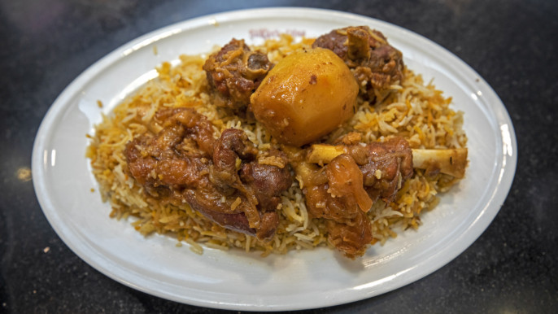
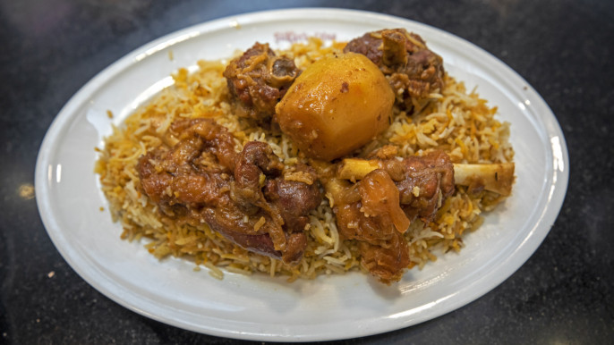

Chris and I escaped the extreme NC heat to see the beautiful landscapes of Norway and Iceland. Along with Chris’s brother Tim, his wife Kim, and her sister Jane, great travelling companians, we signed up for a Viking Ocean cruise, with a pre-trip to Oslo and train ride from Oslo to Bergen. Below is a day-by-day summary of the trip. The most interesting photos are later on, so feel free to skip text and jump around. If you click on a photo, you will get the full image and can scroll through the images in that “block,” using the direction keys if on a laptop. Hit escape to return to the blog. In some sections there are multiple blocks of photos under the same text. I create these blogs as a way to help me remember key details of trips, and to put in context some of my favorite photos. I also love sharing the experience with friends and fellow travellers from different trips we have taken.
Friday, June 27 We arrived in Oslo after an Icelandair flight from RDU to Reykjavik, ate breakfast in the airport, and boarded the next flight to Oslo. Our hotel, the Radisson Blu, was centrally located, by the train station/mall and a short walk to the waterfront. Pizza and bed were all our jetlagged bodies could handle after we dumped our bags in the room. Saturday, June 28 We had a morning tour of Oslo, which included a visit to a viking museum (the main museum was closed for renovations), and my favorite sculture park. At the museum we had a demonstration of the methods of viking shipbuilding, using overlapping planks of wood; and saw a model of an actual viking ship which had been excavated from land — it was a burial ship, which would have housed a body and key possessions of the dead.
What I bought!
My favorite food
 

Miraj Hossan Sajid
Module 1 Assignment Done 2/1/2026